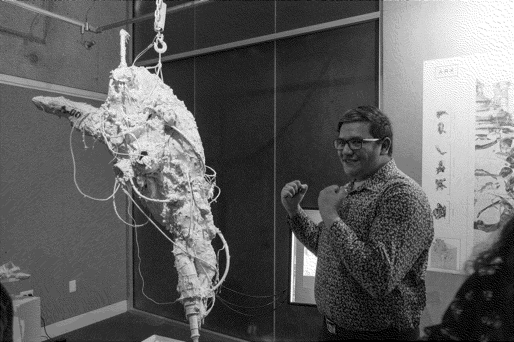
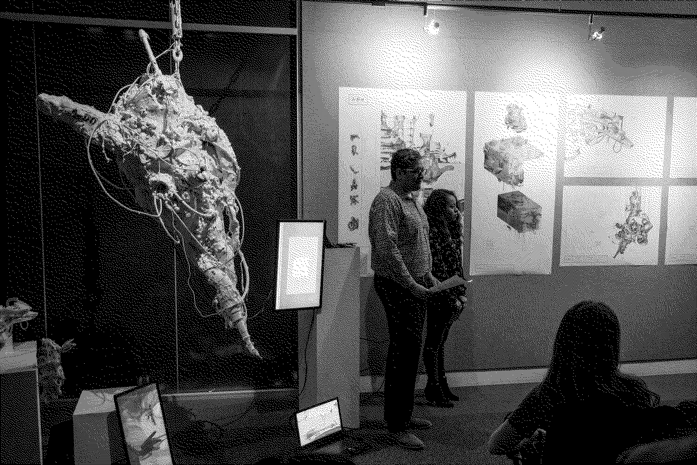
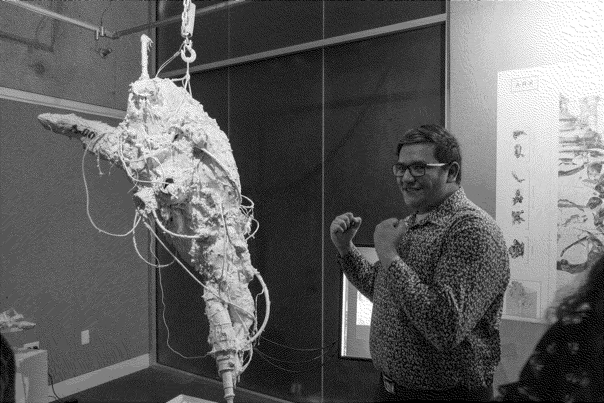
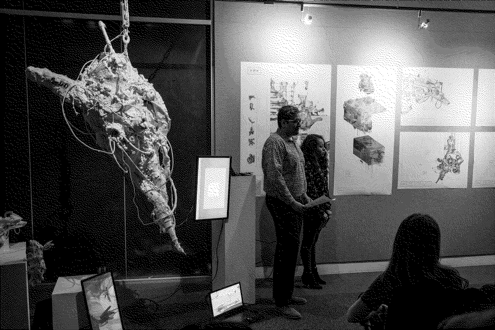

T4T LAB 2019 Texas A&M University. Invited Professor: Joris Putteneers.
Course director: Gabriel Esquivel
Team:
Austin Madrigale,
Michael Marroquin,
Esteban Armenta
and
Karen Cardenas
A.R.K
ARK is a sanctuary of objects speculating on a new ecosystem of accessing, displaying processing, and preserving in a post-singular context in an endeavor to ensure that digital information of continuing value remains accessible and usable. This archive addresses algorithmic operations sectionally, in three levels: the architectural system as a whole, the curatorial process, and the object as tool in how it relates to the system. Programmatically, objects are displayed in a gallery and garden, processed within an archival chamber, and finally laid to rest within the catacombs for deep storage and preservation. This process of preservation is cyclical, allowing for a reduction of time to exist in an object’s quote unquote lifespan. The objects are not only preserved but are repurposed to be able to produce new objects, through data collection and sequencing.
This system utilizes algorithmic processes working at three scales:
1) The first level is the ecosystem as a whole. The gardens above ground landmarked by follies outputted by the machine determined ideals of a picturesque, rejecting Kantian perspectives of the beautiful and sublime, in order inject its own aesthetic. A gallery where an object’s “hardware” is displayed and accessed by a subject curated entirely up to the machine’s discretion.
Below the gardens, the liminal space of the archival chambers where an objects data is collected and processed in its transition to becoming digitally preserved,
and finally to storage within the catacombs where the object’s remains are stored in the “folders” within the poche. Due to the cyclical nature of this ecosystem, if objects are considered significant due to machine discretion, the object data will be outputted and sent to the gardens to be displayed or if deemed insignificant (for example: object duplicates) are then sent to the incinerator to be deleted.
2) The next level of algorithmic processing, is curation. There is a step by step process in the object’s journey from arrival to storage that takes place within the archival chamber. This process is aided by artificially intelligent tools dubbed The Curators. The Curators are charged with classifying, appraising, sorting, collecting, and interpreting object data through photogrammetric scanning, material extraction, and cataloguing for digital and physical preservation.
In the Second Digital Turn, Mario Carpo describes the new technological advancements in classification and sorting that have allowed data to be collected. Technology giants such as Google and Amazon have allowed people to correctly sort information or files in a specific order, but machines are able to do the job at a more efficient rate. From today’s big data perspective, it is easy to see that classifications also function by structuring and formalizing a random stock of information, providing speedier access to all data in an inventory by way of indexing. In Amazon Warehouses, objects are not sorted by subject or category, but only based on the frequency of scale, following an order that would be meaningless to humankind. This model of machine classification is seen within the chambers of our architecture. The Curators define their own system of classification unbeknownst to human understanding. This leads to a developed library of both meta and material data in order to create an accurate rendering of authenticated content over time.
3) At the smallest scale, the algorithm functions as a tool. A collection of objects repurposed as a difficult whole. Each “tool” is made from the “hardware” of other typologies. After a certain critical mass is outputted, when the the tool has enough information to be of use, it begins to aid in the curatorial process of the system. The result of these parts to whole is a completely new typology, the tool becomes a plane of objects through aggregation, delamination, bashing, growth, and decontextualization allowing for transtemporality of objects. The pieces are not fused or merged, retaining its own objectual qualities. The curator itself is not self sufficient, but rather becomes a product of its environment, a time capsule of collected and preserved objects. The object uses collected data to render new outcomes such as objects, spaces, and tools. The tools are no longer parts of the system but they are the system now.
CONCLUSION:
This project sorts in two categories. A machine’s data processing output and a human subject’s understanding of this output. While both are independent of each other, both can be used as a resource for each other in this ecology. The system learns from human data while the human may also learn from the data outputs of the system, creating a symbiotic relationship between both system and human without any interdependence. This archive produces interpretations of architecture and human and machine interaction through new means of object collection and data processing.
 


